- Semestre 5 · Clase 11
- Unidad 2 · Rebote, fricción y choques
Programación Web
clases a fondo, update con delta,
Math y arreglos
Y quedamos así

Todas se mueven... y todas se escapan 🧱
les agregamos fricción
y las hacemos chocar entre ellas
Hoy vemos
Rebote · Fricción · Choques
Así va a quedar. Pueden jugar con la demo
Para ponernos al día con la clase pasada
Ejercicio 2:
Que sus bolas se muevan.
1. x, z, vx, vz y un método update(delta) en la clase
2. un reloj, para sacar delta
3. un arreglo bolas y un for en animar()
Que sus bolas se muevan.
1. x, z, vx, vz y un método update(delta) en la clase
2. un reloj, para sacar delta
3. un arreglo bolas y un for en animar()
Rebote
las bolas contra los bordes
1. ¿Cuándo llegó la bola al borde?
2. ¿Qué le pasa a su velocidad?
1 · ¿Hasta dónde puede llegar el centro de la bola?
menos un radio
const limiteX = anchoMesa / 2 - this.radio; // 4 - 0.2 = 3.8
const limiteZ = fondoMesa / 2 - this.radio; // 2 - 0.2 = 1.82 · ¿Qué le pasa a la velocidad?
Rebotar es darle la vuelta a la velocidad: vx = -vx
se invierte vx
Choca con la de arriba o la de abajo:
se invierte vz
La otra componente no se toca: por eso el rebote conserva el ángulo
Paso 4 · rebotarEnBordes(), los bordes de izquierda y derecha
rebotarEnBordes()
{
const limiteX = anchoMesa / 2 - this.radio;
if (this.x > limiteX)
{
this.x = limiteX;
this.vx = -this.vx;
}
if (this.x < -limiteX)
{
this.x = -limiteX;
this.vx = -this.vx;
}
}¿No bastaba con invertir la velocidad?
Si la bola quedó un pelito adentro del borde,
el siguiente cuadro vuelve a invertir...
y se queda vibrando pegada a la pared
Paso 4 · arriba y abajo: lo mismo, con z
rebotarEnBordes()
{
const limiteZ = fondoMesa / 2 - this.radio;
if (this.z > limiteZ)
{
this.z = limiteZ;
this.vz = -this.vz;
}
if (this.z < -limiteZ)
{
this.z = -limiteZ;
this.vz = -this.vz;
}
}Paso 4 · y se llama dentro de update()
update(delta)
{
this.x += this.vx * delta;
this.z += this.vz * delta;
this.rebotarEnBordes();
this.malla.position.set(
this.x, alturaPano + this.radio, this.z
);
}Paso 4 · la blanca rebotando (con su rastro)
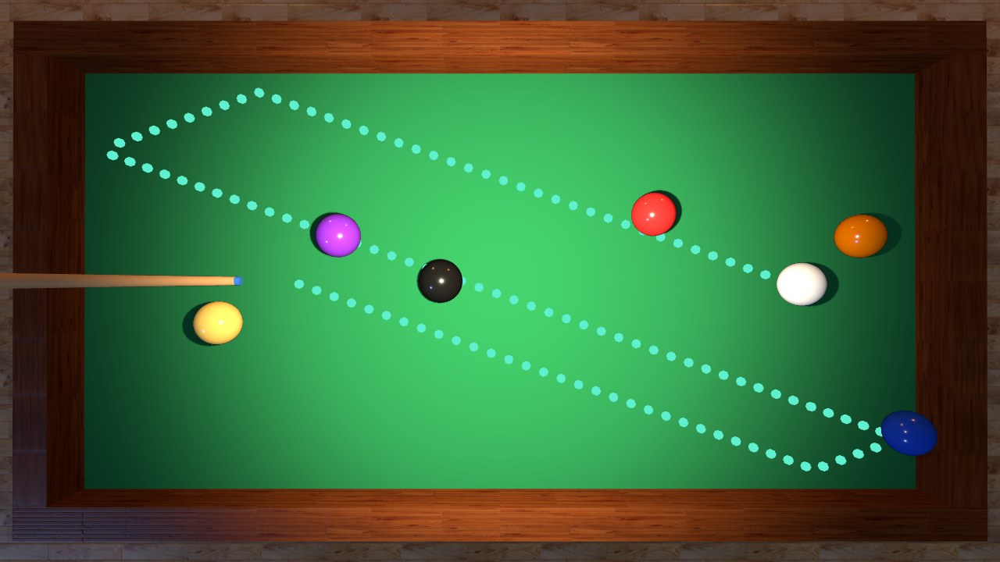
Vista desde arriba. Los puntos turquesa son solo para la captura
Lancen la bola y jueguen con los números
En una mesa real, el paño frena la bola
hasta que se detiene
Fricción: en cada cuadro la bola pierde un poquito de velocidad
const FRICCION = 0.8; // al inicio del archivo
freno = 1 - FRICCION × delta
0.8 × 0.016 = 0.013 → freno = 0.987 → conserva el 98.7% de su velocidad
0.8 × 0.016 = 0.013 → freno = 0.987 → conserva el 98.7% de su velocidad
Porque entonces la fricción dependería de los
cuadros por segundo... igual que antes 🙃
El delta también va aquí
Y para saber cuándo está "casi quieta", necesitamos su rapidez
La raíz cuadrada es otra herramienta de Math, la de la clase pasada
Math.sqrt(9) // 3
Math.sqrt(25) // 5
Math.sqrt(2) // 1.4142...Paso 5 · rapidez()
rapidez()
{
return Math.sqrt(this.vx * this.vx + this.vz * this.vz);
}Paso 5 · frenar(delta)
frenar(delta)
{
const freno = 1 - FRICCION * delta;
this.vx *= freno;
this.vz *= freno;
if (this.rapidez() < 0.05)
{
this.vx = 0;
this.vz = 0;
}
}Sin él, la velocidad se haría 0.0000001,
0.00000001... y la bola
se arrastraría para siempre sin llegar a cero
Más adelante lo usamos para saber si la mesa está quieta
Paso 5 · se llama en update() y listo
update(delta)
{
this.x += this.vx * delta;
this.z += this.vz * delta;
this.rebotarEnBordes();
this.frenar(delta);
this.malla.position.set(
this.x, alturaPano + this.radio, this.z
);
}Paso 5 · rebota, se frena y se detiene
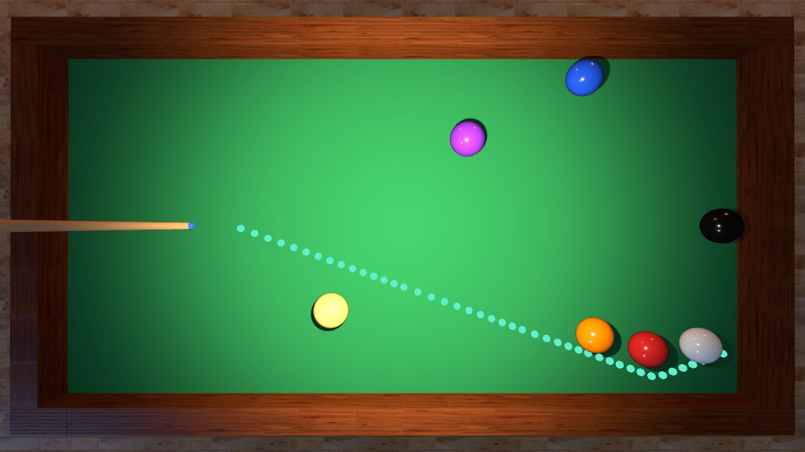
Después de unos 6 segundos queda quieta, a mitad de la mesa
🖼️ ESPACIO PARA MEME/GIF
Ejercicio 3:
Que las bolas reboten en los cuatro bordes
y se frenen solas hasta quedar quietas.
Cada una con su velocidad inicial
Que las bolas reboten en los cuatro bordes
y se frenen solas hasta quedar quietas.
Cada una con su velocidad inicial
Choques
bola contra bola
Paso 5 con todas las bolas: miren los rastros
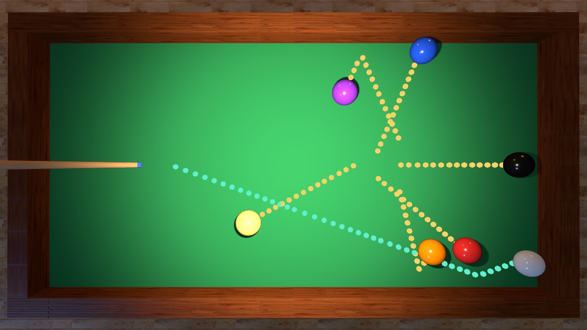
Rebotan en los bordes, pero entre ellas se atraviesan como fantasmas 👻
1. ¿Se tocan?
2. ¿Cómo las separo?
3. ¿Hacia dónde salen?
Pregunta 1 · ¿se tocan?
Para saberlo necesitamos un collider
Una forma invisible y sencilla
que usamos para calcular los choques
en lugar de la malla de verdad
que usamos para calcular los choques
en lugar de la malla de verdad
El collider de una bola es un círculo: un centro y un radio
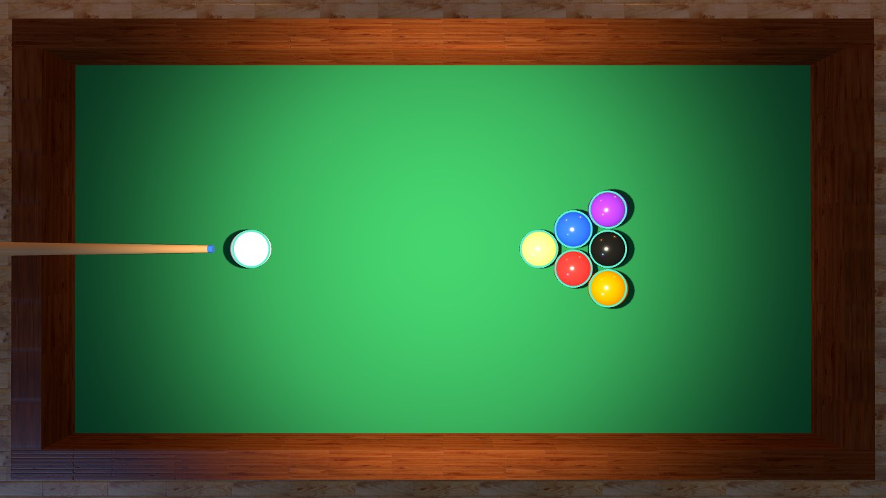
Vista desde arriba. Los aros turquesa son los colliders (no existen en el código, es un dibujo)
Una esfera de 48 × 48 tiene miles de triángulos.
El collider son dos números:
x, z (centro) y radio
La malla es para verse bonita; el collider es para calcular rápido
Dos círculos se tocan cuando la distancia entre sus centros...
...es menor que la suma de sus radios
¿Y cómo se mide la distancia entre dos centros?
Arrastren la bola amarilla y miren los números
Paso 6 · detectar el choque (por ahora solo pintamos de rojo)
chocar(otra)
{
const dx = otra.x - this.x;
const dz = otra.z - this.z;
const distancia = Math.sqrt(dx * dx + dz * dz);
if (distancia < this.radio + otra.radio)
{
this.malla.material.color.set(0xff0000);
otra.malla.material.color.set(0xff0000);
}
}Paso 6 · y animar() le pregunta a la blanca por la amarilla
function animar()
{
const delta = Math.min(reloj.getDelta(), 0.05);
for (const bola of bolas)
{
bola.update(delta);
}
blanca.chocar(amarilla);
controles.update();
renderer.render(scene, camera);
}Paso 6 · la blanca llega a la amarilla
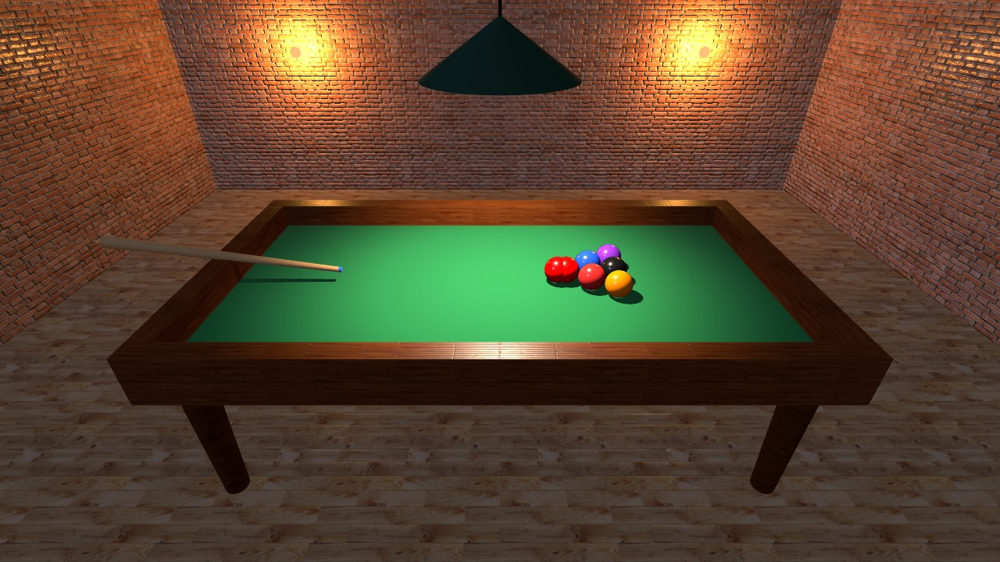
Se tocan: las dos se ponen rojas 🔴 (el collider funciona)
Paso 6 · un instante después
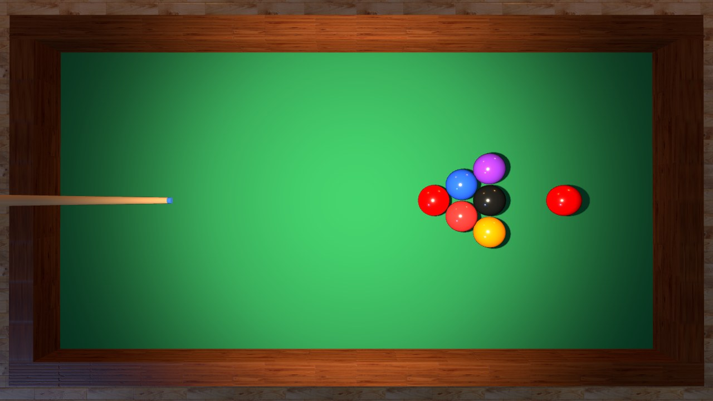
Detectar ✔ pero las dos siguen su camino: se atraviesan. Falta responder
Ahora, la respuesta
Pregunta 2: ¿cómo las separo?
Pregunta 3: ¿hacia dónde salen?
Pregunta 2 · separarlas
dx y dz entre la distancia
const nx = dx / distancia;
const nz = dz / distancia;y solo marca la dirección
del traslape, en sentidos contrarios
this va hacia atrás (−n) y la otra hacia adelante (+n)
Paso 7 · si no se tocan, salir; si se tocan, la normal
chocar(otra)
{
// ...dx, dz y distancia, igual que antes...
if (distancia >= this.radio + otra.radio)
{
return; // no se tocan
}
const nx = dx / distancia;
const nz = dz / distancia;
}Paso 7 · separar
chocar(otra)
{
// ...detectar y calcular la normal, igual que antes...
const traslape = this.radio + otra.radio - distancia;
this.x -= nx * traslape / 2;
this.z -= nz * traslape / 2;
otra.x += nx * traslape / 2;
otra.z += nz * traslape / 2;
}después de update(),
así que dibujar pasa a ser un método aparte
update(delta)
{
// ...mover, rebotarEnBordes() y frenar()...
}
dibujar()
{
this.malla.position.set(
this.x, alturaPano + this.radio, this.z
);
}Ahora el cuadro tiene tres etapas: mover, chocar y dibujar
function animar()
{
for (const bola of bolas)
{
bola.update(delta); // 1. mover
}
blanca.chocar(amarilla); // 2. chocar
for (const bola of bolas)
{
bola.dibujar(); // 3. dibujar
}
}Paso 7 · solo separamos, sin tocar las velocidades
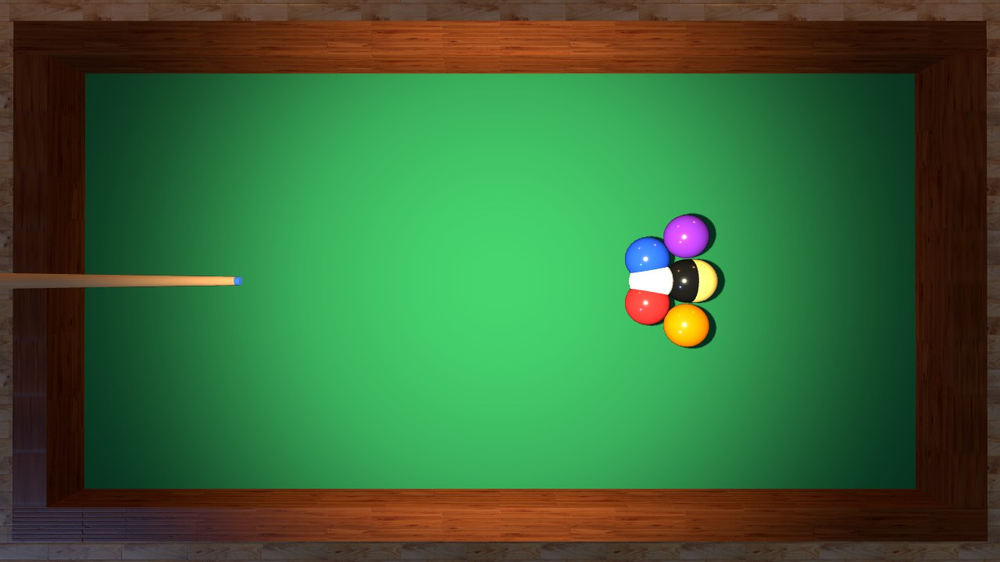
Ya no se atraviesan, pero la blanca empuja a la amarilla como una topadora 🚜
Pregunta 3 · ¿hacia dónde salen?
Empecemos por el caso más fácil: el choque de frente
las dos bolas intercambian sus velocidades
Es el mismo truco de las bolitas que cuelgan en el escritorio (el péndulo de Newton)
así que descomponemos la velocidad en dos partes
se intercambia, como en el choque de frente
La parte tangente (la que va de lado)
no cambia: cada bola se la queda
Muevan el desvío: de frente, rozando, y todo lo de en medio
¿Cuánta velocidad apunta hacia la otra bola?
acercamiento =
relativaX × nx + relativaZ × nz
Es el producto punto: multiplicar x con x, z con z, y sumar. relativaX × nx + relativaZ × nz
Mide cuánto de la velocidad va en dirección de la normal
vista desde la otra:
relativaX = this.vx − otra.vx
relativaZ = this.vz − otra.vz
Si la otra está quieta, es simplemente la velocidad de this
Paso 8 · dentro de chocar(), después de separar
const relativaX = this.vx - otra.vx;
const relativaZ = this.vz - otra.vz;
const acercamiento = relativaX * nx + relativaZ * nz;Paso 8 · rebotar
chocar(otra)
{
// ...detectar, separar y calcular el acercamiento...
if (acercamiento <= 0)
{
return; // ya se están separando
}
this.vx -= acercamiento * nx;
this.vz -= acercamiento * nz;
otra.vx += acercamiento * nx;
otra.vz += acercamiento * nz;
}Si es cero o negativo, las bolas ya se están alejando
(por ejemplo, justo después de separarlas).
Rebotarlas otra vez las dejaría pegadas 🧲
Paso 8 · solo la blanca y la amarilla
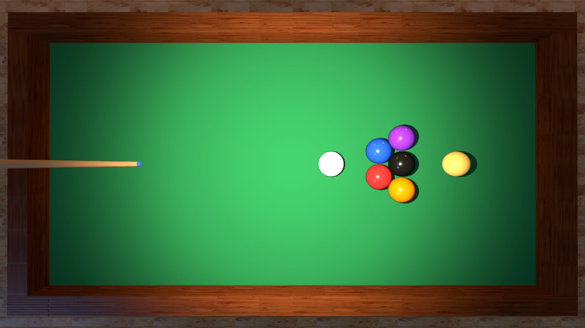
La blanca se detiene y la amarilla sale con su velocidad (¡y atraviesa al resto del triángulo! todavía no los revisamos)
¿Todas contra todas?
Cada cuadro: 7 bolas → 21 parejas
Paso 9 · todas contra todas
for (let i = 0; i < bolas.length; i++)
{
for (let j = i + 1; j < bolas.length; j++)
{
bolas[i].chocar(bolas[j]);
}
}Paso 9 · va entre update y dibujar
function animar()
{
// ...delta y bola.update(delta) para cada bola...
for (let i = 0; i < bolas.length; i++)
{
for (let j = i + 1; j < bolas.length; j++)
{
bolas[i].chocar(bolas[j]);
}
}
// ...bola.dibujar() para cada bola y render...
}La rotura · la blanca va a golpear: blanca.vx = 9 y blanca.vz = 1.35
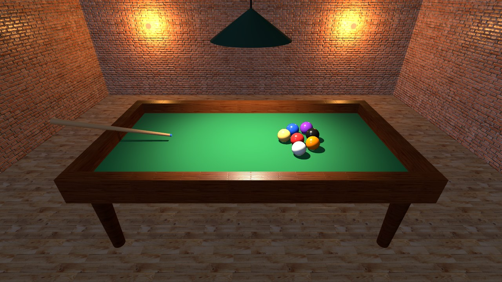
1 · el instante del golpe
La rotura
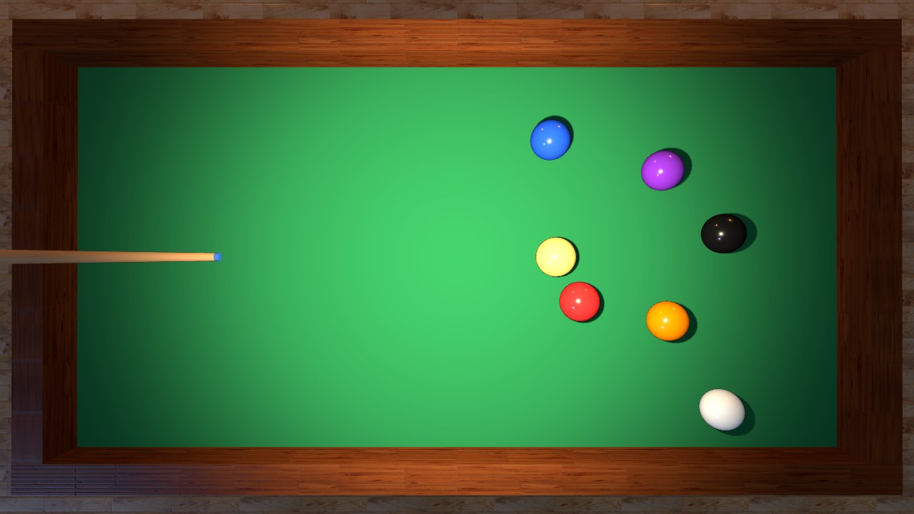
2 · el triángulo se abre (0.9 segundos)
La rotura
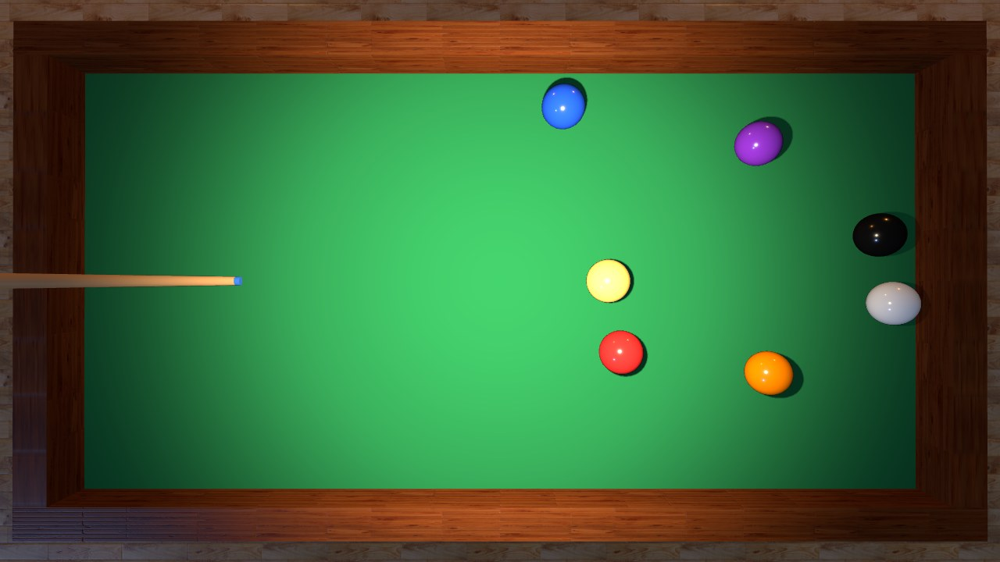
3 · las bolas rebotan en los bordes y entre ellas (1.6 segundos)
La rotura
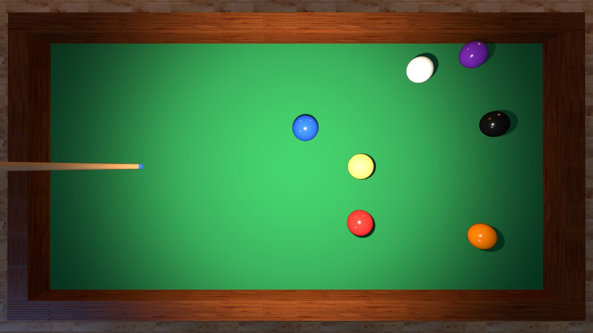
4 · la fricción las detiene (a los 12 segundos)
🖼️ ESPACIO PARA MEME/GIF
Ahora con todo: prendan los colliders y las flechas de velocidad
cada rebote pierde un poquito de energía
Eso es la restitución
const RESTITUCION = 0.92; // 1 = rebote perfecto, 0 = no rebotaCon restitución · en los bordes y entre bolas
// en rebotarEnBordes():
this.vx = -this.vx * RESTITUCION;
// en chocar():
const impulso = acercamiento * (1 + RESTITUCION) / 2;
this.vx -= impulso * nx;
this.vz -= impulso * nz;
otra.vx += impulso * nx;
otra.vz += impulso * nz;Si en un solo cuadro avanzan más que el diámetro de la otra,
se la saltan sin chocar 👻
Por eso limitamos delta y la velocidad del golpe. En juegos serios se hacen varios pasos pequeños por cuadro
Un último truco: el golpe con el teclado
window.addEventListener("keydown", function (evento)
{
if (evento.code === "Space")
{
blanca.vx = 9;
blanca.vz = 1.35;
}
});Hoy solo copien estas líneas
Para volver a empezar: cada bola recuerda dónde empezó
this.x0 = x; // en el constructor: dónde empezó
this.z0 = z;
reiniciar() // un método nuevo en la clase
{
this.x = this.x0;
this.z = this.z0;
this.vx = 0;
this.vz = 0;
}Y la tecla R, junto a la barra espaciadora
if (evento.code === "KeyR") // dentro del keydown
{
for (const bola of bolas)
{
bola.reiniciar();
}
}Versión final · espacio golpea, R reinicia

Todo el código, paso por paso: ejemplos/programacion-web/billar-fisica
(abran index.html?paso=00 ... paso=11)
(abran index.html?paso=00 ... paso=11)
Ejercicio 4:
Que su bola blanca choque con otra bola.
1. detectar con la distancia y los radios
2. separar con la normal y el traslape
3. rebotar con el acercamiento
Que su bola blanca choque con otra bola.
1. detectar con la distancia y los radios
2. separar con la normal y el traslape
3. rebotar con el acercamiento
Ejercicio 5:
Que todas las bolas choquen entre sí
y que la barra espaciadora golpee la blanca.
Si les sobra tiempo: R para reiniciar y RESTITUCION
Que todas las bolas choquen entre sí
y que la barra espaciadora golpee la blanca.
Si les sobra tiempo: R para reiniciar y RESTITUCION
Actividad
Su sala de billar, ahora con física
Las bolas de su sala se mueven,
rebotan y chocan
Las bolas de su sala se mueven,
rebotan y chocan
Lo que debe funcionar:
class Bola con x, z, vx, vz, update(delta) y dibujar()
Rebote en los cuatro bordes y fricción
Choques entre todas las bolas (for dentro de for)
La barra espaciadora golpea la blanca
class Bola con x, z, vx, vz, update(delta) y dibujar()
Rebote en los cuatro bordes y fricción
Choques entre todas las bolas (for dentro de for)
La barra espaciadora golpea la blanca
Para subir la nota (opcional)
R reinicia la mesa · RESTITUCION en bordes y choques El taco se esconde mientras algo se mueve
Más bolas, o bolas de su temática
(index.html, script.js y texturas)
Material de apoyo en Blackboard:
el PDF de esta clase y la carpeta
billar-fisica con los 11 pasos
Revisión
el centro llega hasta el borde menos el radio
y se invierte la velocidad (vx = -vx).
La fricción la frena con delta
distancia < r + r → se tocan.
Se separan con la normal y se intercambia
la parte normal de la velocidad.
Con muchas bolas: for dentro de for
¿Algo que no cuadró?
La próxima clase
Ya tenemos bolas que se mueven y chocan pero el golpe lo damos con una sola tecla
mouse y teclado
para apuntar el taco y decidir qué tan fuerte golpeamos
Nos vemos la próxima clase
Si me quieren agregar
Correo institucional:
jjardila@libertadores.edu.co